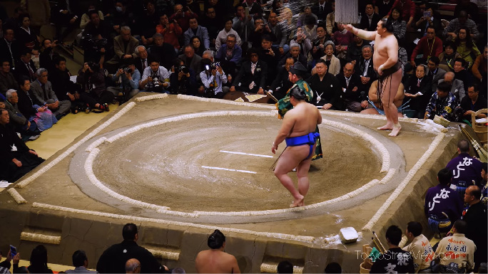
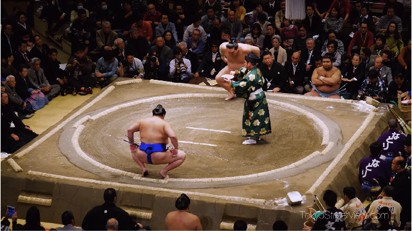
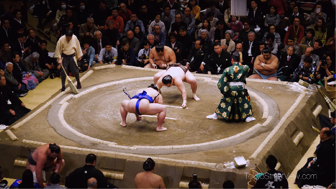
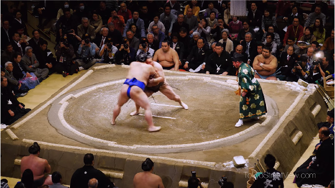
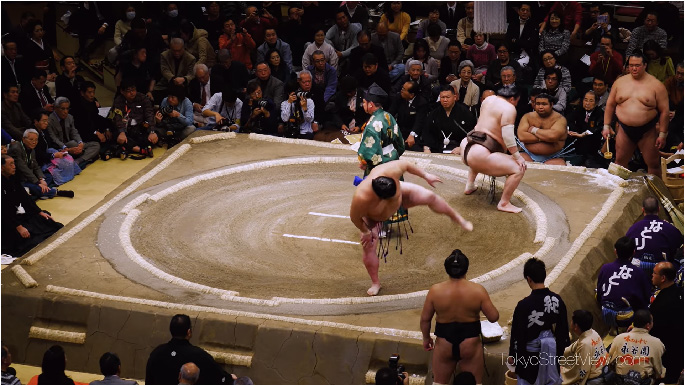
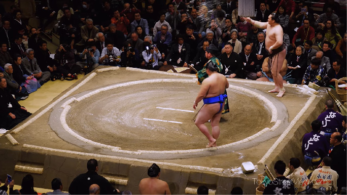
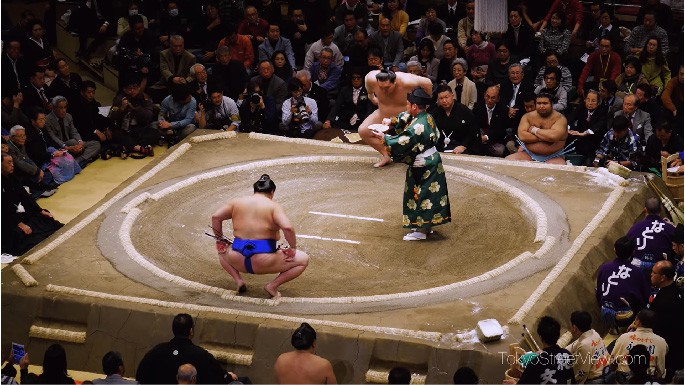
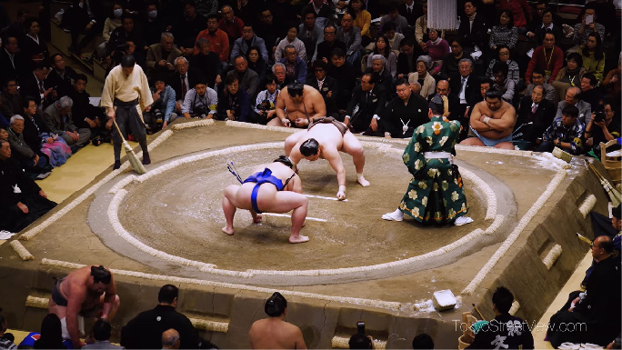
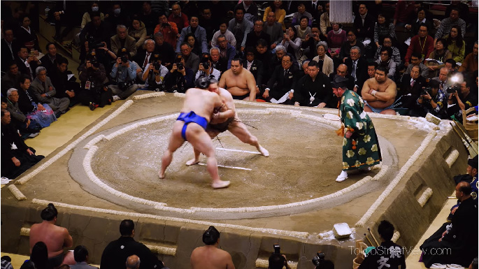
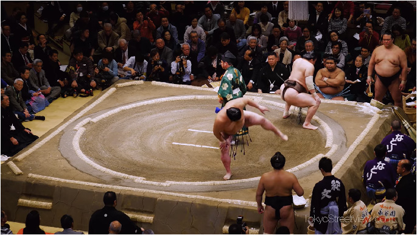

RULES:
Below is a full video of a match including the introduction ceremony. This match is between Yokozuna Hakuho in the black belt and a guy in the blue belt.
To understand the rules of Grand Sumo we will look at screenshots of one match and walk you through each of the steps that are happening.
To start we see the ring announcer (yobidashi) singing the wrestler’s names. The fan that they hold is to prevent any spit from landing on the ring, contrary to popular belief they do not have the names written on them. If they require a cheat sheet they will hide them in the palm of their hand.
Next we see the wrestlers entering the ring along with the referee stepping up into the center of the ring.
The referee will call the names again, and the opening ritual begins. Enter the slaps and the claps. The wrestler is handed “power water” and a “power towel” from a wrestler who has not lost on that day. After this they throw salt into the ring to cleanse it from evil and perform the entrance ceremony to ward off any evil spirits in the air. 
They then walk out of the ring again, grab more salt, throw it in and walk to the starting lines. Display open palms and perform the sumo stomps (shiko).
Finally you will see the referee raise his war fan to the side and the wrestlers will bend down and touch the ground and return to their corners for a final time. 
This is usually when wrestler’s perform their personal pre bout ritual. A towel is handed to them by a ring announcer, one of their many jobs. A final salt pile is thrown, the wrestlers walk to the starting lines, and prepare for the fight. The referee will call for hands down and will raise his war fan to the front signifying the men can begin their fight. It is now in the wrestler’s hands to begin the fight they must agree to fight by placing both hands onto the ground.
Consent from both parties must be present, if there is not the referee will stop the match and restart it.

When the fight begins, the referee screams “Spirit” followed by “it is still on”, as the match continues and the men slow down the referee will yell words of encouragement for the wrestlers to continue. There is a list of 82 winning techniques and 5 non technical methods to win. This sounds daunting but they all boil down to one of two common goals. Have your opponent touch the outside of the ring OR have the opponent touch the floor with any part of their body besides the soles of their feet (yes you lose if the top of the feet touch).
There are a few things that are banned in the sport. Those are as follows:
No hair pulls.
No closed fist punches.
No kicks above the knee (Below is considered a sweep).
No genetal hits.
A common question asked is "What are the weight classes?". The answer is there are none, Grand Sumo has no weight classes. There is a minimum height requirement and weight requirement upon entrance. 167 cm (5'4) in height and weighing 67 kg (141 lbs). Both relatively simple to achieve and in the case of height may be looked over entirely.
To understand the rules of Grand Sumo we will look at screenshots of one match and walk you through each of the steps that are happening.
To start we see the ring announcer (yobidashi) singing the wrestler’s names. The fan that they hold is to prevent any spit from landing on the ring, contrary to popular belief they do not have the names written on them. If they require a cheat sheet they will hide them in the palm of their hand.
Next we see the wrestlers entering the ring along with the referee stepping up into the center of the ring.
The referee will call the names again, and the opening ritual begins. Enter the slaps and the claps. The wrestler is handed “power water” and a “power towel” from a wrestler who has not lost on that day. After this they throw salt into the ring to cleanse it from evil and perform the entrance ceremony to ward off any evil spirits in the air. 
They then walk out of the ring again, grab more salt, throw it in and walk to the starting lines. Display open palms and perform the sumo stomps (shiko).
Finally you will see the referee raise his war fan to the side and the wrestlers will bend down and touch the ground and return to their corners for a final time. 
This is usually when wrestler’s perform their personal pre bout ritual. A towel is handed to them by a ring announcer, one of their many jobs. A final salt pile is thrown, the wrestlers walk to the starting lines, and prepare for the fight. The referee will call for hands down and will raise his war fan to the front signifying the men can begin their fight. It is now in the wrestler’s hands to begin the fight they must agree to fight by placing both hands onto the ground.
Consent from both parties must be present, if there is not the referee will stop the match and restart it.

When the fight begins, the referee screams “Spirit” followed by “it is still on”, as the match continues and the men slow down the referee will yell words of encouragement for the wrestlers to continue. There is a list of 82 winning techniques and 5 non technical methods to win. This sounds daunting but they all boil down to one of two common goals. Have your opponent touch the outside of the ring OR have the opponent touch the floor with any part of their body besides the soles of their feet (yes you lose if the top of the feet touch).
There are a few things that are banned in the sport. Those are as follows:
No hair pulls.
No closed fist punches.
No kicks above the knee (Below is considered a sweep).
No genetal hits.
A common question asked is "What are the weight classes?". The answer is there are none, Grand Sumo has no weight classes. There is a minimum height requirement and weight requirement upon entrance. 167 cm (5'4) in height and weighing 67 kg (141 lbs). Both relatively simple to achieve and in the case of height may be looked over entirely.
History
2000 years ago
It is agreed that sumo started 2000 years ago, but this never really was a spectator sport. Rather a ritual performed to ensure a good harvest.
Edo Period
In the Edo period (1603 to 1867) Sumo took the form that it holds today. No longer was it purely a ritual rather a spectator sport for the masses to enjoy.
1900s
Durig the 1900s multiple changes took place to feed the public's desire to watch. Before this there were only 2 tournaments a year. In the early 1900s it increased to 4. Then again in 1958 this increased to 6 where it sits today. Also in 1902 the highest rank of yokozuna was added.
Today And The Future
Today we have 6 tournaments a year. And a small push towards wrestler’s health was initiated mainly in regards to concussions. Matches and rematches would previously not be stopped or prevented due to injury.
Ranking
For Grand Sumo the ranking system is a pyramid broken into 6 divisions. All wrestlers in these 6 divisions are broken into East and West with East being the higher rank. So in order it would be East 1 -> West 1 -> East 2 -> West 2 and so on.
The top two groups hold the least amount of wrestlers and are of the highest skill level. These top two groups are also the only two that are salaried and the top division is the only rank that offers potential sponsor money from matches.
To rise in the ranks wrestlers must score a winning record for that tournament which spans 15 days. For the top two ranks that means 8+ wins as they fight every day of these 15 day tournaments. For the rest of the ranks they only fight 7 days which are broken into groups of 2 or 3 days in a row. It should be stated that a person with a 7-0 record will have a greater increase in rank than one who has a record of 4-3. For those who have losing records on their final day your rank is decreased based on loses.
The top rank, Makuuchi, ranks are a little different. The first 30 ranks are the same as previous, winning record means an increase in rank. After this you have the potential to become the first champion rank, there are always at least 2 of the lowest rank champions,komusubi . This is given to whoever is performing well enough that the council thinks it should be given too. To get the next rank, Sekiwake, it is common for Komusubi to have a record of 11-4 to gain a promotion. Lower ranks can receive the promotion but a higher record is required and space must be available. The second highest rank, Ozeki, which used to be the official highest rank up until 1909, is gained with 33 total wins over 3 consecutive tournaments as a Sekiwake. Finally, Yokozuna, the highest rank in all of Sumo.

This rank has no official guaranteed way to acquire it, but usually two dominant and consecutive tournament wins as an Ozeki are enough to grant that promotion. In the end that still may not be enough, the association decides who will become the Yokozuna. The one and only rank that cannot be lost no matter what, Yokozuna is the best of the best. He is expected to win every match besides potentially the other Yokozuna if one is even present. When a Yokozuna is beginning to show his age or his injuries are catching up to him he will be asked to retire.
If you are injured mid tournament and must sit out to heal you lose all matches in that tournament that you do not fight in. Perhaps one of the most interesting parts of sumo to me is the lack of sympathy. During a fight you rarely see wrestlers trying to hurt each other or exerting extra force than necessary, it is all relatively tame. For example, wrestlers will often hold onto their opponents after they are pushed out to make sure they are stable and not taking an unnecessary fall. The brutality comes from the pressure to win and maintain your rank even if you are hurting. In other sports fights can be canceled at the last minute and neither fighters do not lose or gain anything officially. In sumo this is not the case. If you do not fight for whatever reason you lose.
FAQ
Why do they wear the belts?
The belts, or Mawashi, are traditional belts worn by wrestlers. They are heavy duty and wrapped in such a way that they do not usually come off.
What do the wreslters throw at the start of the match?
They throw salt as a part of the cleansing ritual to purify the ring.What does the referee yell?
He yells “Spirit” followed by "Nokotta" meaning “it is still on”.When is the next event?
The next Sumo event will begin on May 14th!
It will be taking place in Tokyo.
It will be taking place in Tokyo.